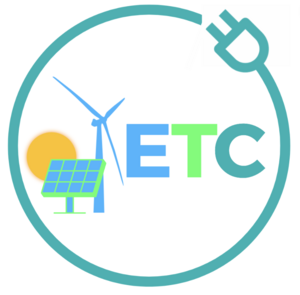
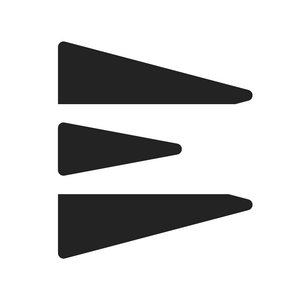
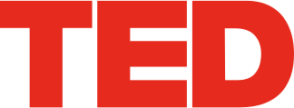

Environmental Engineering at Cornell
Interested in venture capital, finance, AI, operations and energy.
Python, financial modeling, diligence, growth, ArcGIS, research, predictive modeling, AI training-data cleaning, LLM tools
Work
I study Environmental Engineering at  Cornell. I’m on the
Cornell. I’m on the  Cornell Venture Capital deal team for
Cornell Venture Capital deal team for  , and a member of the
, and a member of the
I’m a Clean Energy Advisor at  WestLight Energy, where I co-led Electric-First campaigns in 4 school districts, mobilizing 9,000+ students for an estimated 2M+ kg of CO₂ cut a year.
WestLight Energy, where I co-led Electric-First campaigns in 4 school districts, mobilizing 9,000+ students for an estimated 2M+ kg of CO₂ cut a year.
Before that, I was a research intern in  Stanford Chemistry, an operations & growth intern at
Stanford Chemistry, an operations & growth intern at  PlateTale, an analyst at
PlateTale, an analyst at  RE-volv and a market researcher at
RE-volv and a market researcher at
I also founded Energizing Youth, which has taught 500+ kids about clean energy, and my jewelry brand Chiara Malia.
Research
- Copper–MOF catalysts for converting CO₂ into ethanol
91% Faradaic efficiency. Published with mentors from MIT, Stanford and Washington State.
ICAE (with the UN, Bangkok) · MIT THINK · JSHS · Columbia Junior Science Journal
- Refrigerant-free thermoelectric air conditioning
A low-power cooling system built around an LTC3108 energy harvester.
California Science & Engineering Fair
Talks & press
- TEDxCrystal Springs Youth
- Starting a Climate Movement Before CollegeGlobe Anew · Podcast
- 2026 Youth Sustainability Award WinnerSustainable San Mateo County
- Class Notes: Chiara Luey named award winnerSan Mateo Daily Journal
- Interview Series: Chiara LueyAwesome Math Girls
